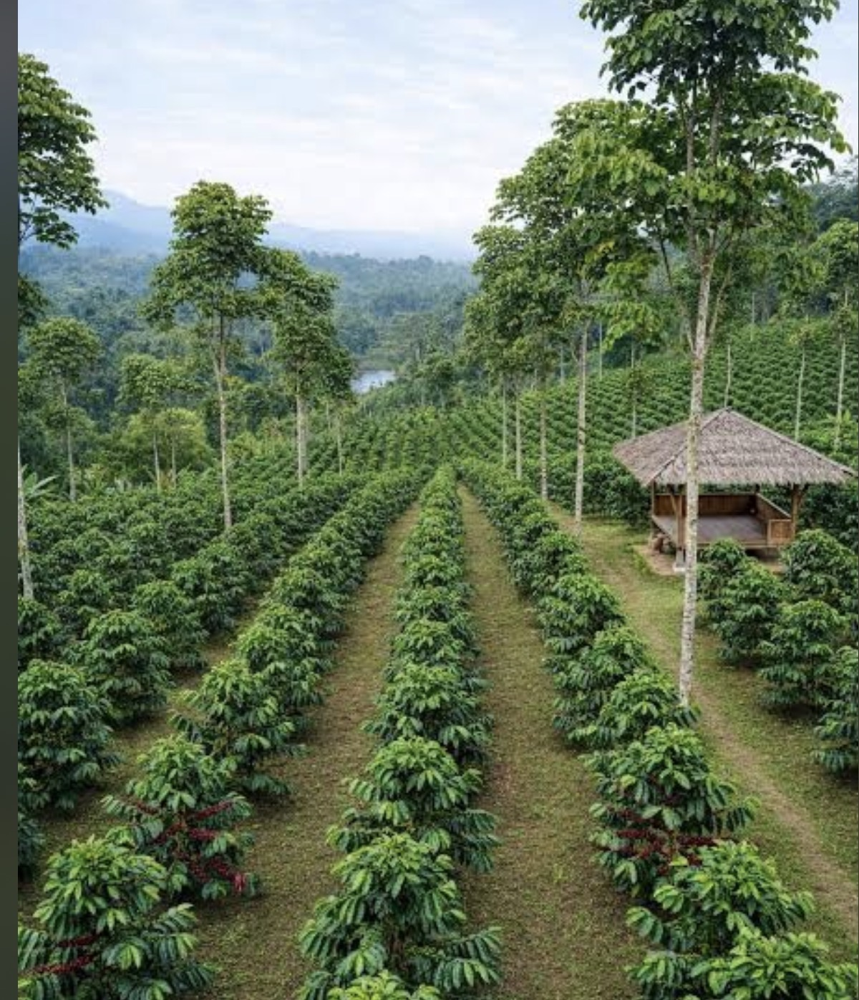

About the Plantation
Green Hills Coffee Plantation is a family-friendly coffee farm where fertile soil, cool mountain air and sustainable farming practices come together. Visitors can explore our fields, learn how coffee is made and meet the growers who care for every plant.

Coffee Varieties We Grow
- Arabica
- Robusta
- Batian
- Ruiru 11
Coffee Production Process
- Planting
- Growing and caring for the coffee trees
- Harvesting ripe coffee cherries
- Processing, washing and drying the beans
- Roasting and packaging
Plantation Activities
- Pruning
- We trim selected branches to keep the coffee trees healthy, open and productive.
- Harvesting
- Workers hand-pick ripe, red cherries so each batch has the best possible flavour.
- Drying
- Processed beans are spread in thin layers and dried carefully until they reach the right moisture level.